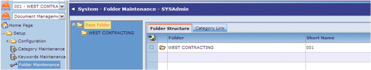
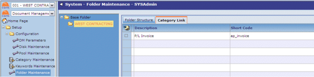

Folder Structure
Folders provide a structure within which indexed documents can be found. Typically the top-level folders correspond to , and subfolders correspond, for example, to departments. Each folder has document categories associated with it; these determine which types of documents can be stored in each folder.
To set up folders:
- Go to Folder Maintenance.
- Select a folder in the tree on the left.
- On the Folder Structure tab, add the subfolders you want the folder to contain.

Folders immediately below the base folder should correspond to your , with the number as the Short Name. Within each of these folders, you can have subfolders with different names.
- On the Category Link tab, attach one or more categories to the folder.
